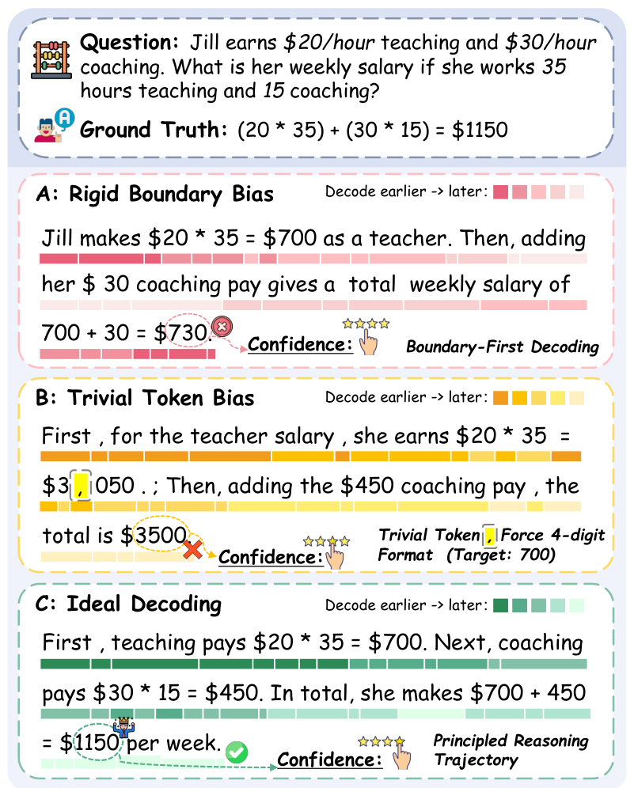
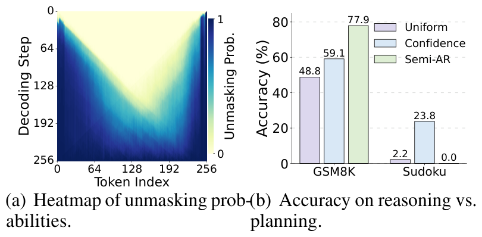
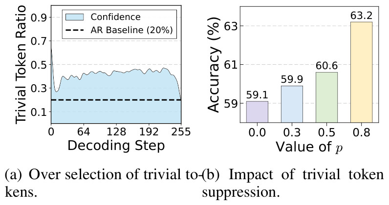
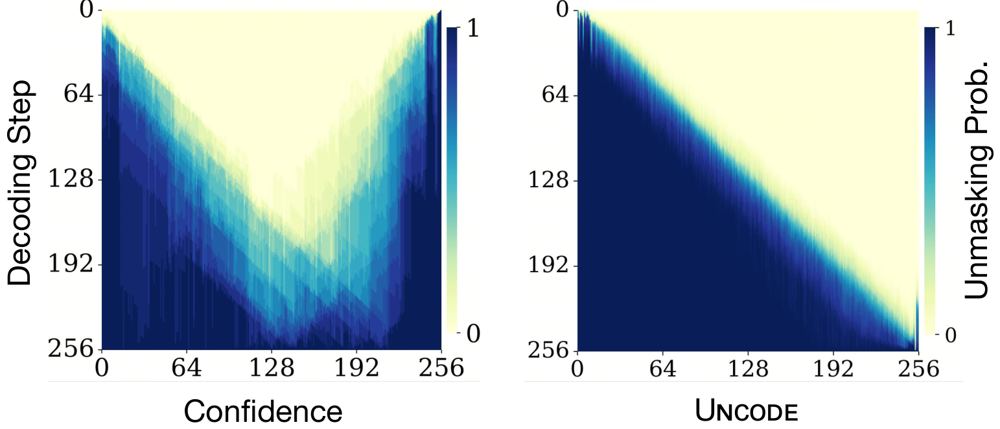
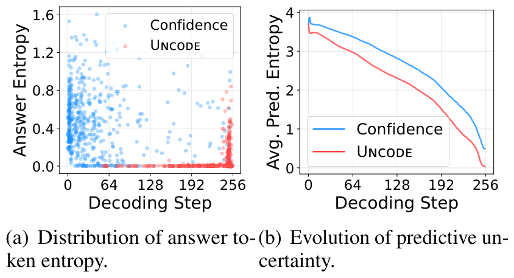
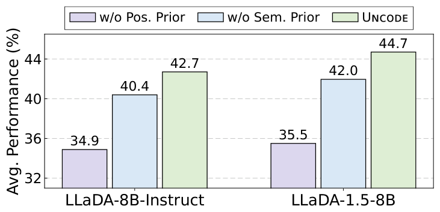

Two biases, one root cause. Greedy uncertainty-based decoding systematically prefers boundaries and trivial tokens — both stem from "easy" positions being unmasked first.
2
Calibrate, don't retrain. A position prior and a semantics prior, multiplied onto the existing score, are enough to fix it — no fine-tuning, no architecture change.
3
Closing the gap to autoregressive. Decoding-side changes alone bring an 8B MDM to near-parity with a strong 7B autoregressive model on reasoning and planning.
4
Compatible with efficient decoding.Uncode plugs into existing efficient decoding strategies (fast samplers), preserving their 2×–4× speedups while improving accuracy.
Highlights
> 7%
average gain over the strongest decoding baseline
44.7 ≈ 45.3
LLaDA-1.5 + Uncode vs. Qwen-2.5-7B (autoregressive)
3 × 7
MDM backbones × reasoning & planning benchmarks
0
extra training — plug-and-play, decoding-side only
The Two Decoding Biases
MDMs decode by iterative unmasking — any-order, multi-token, non-autoregressive. The
unmasking order is decisive, and standard MDMs greedily unmask the least-uncertain positions first.
That greedy heuristic creates two systematic biases.

The problem in one picture. Uncertainty-based decoders greedily unmask
(A) boundary tokens and (B) trivial tokens first,
fixing the answer before the rationale exists. (C) The ideal trajectory establishes the reasoning chain, then resolves the answer.
Bias #1
Rigid Boundary Bias
Boundary tokens (BOS/EOS and sentence edges) are consistently decoded first — a positional
regularity learned during training — so decoding collapses inward along a fixed “U-shaped”
trajectory. The model thus commits to an answer before the reasoning is built, with the
order fixed by position rather than the task.

A characteristic U-shaped unmasking pattern; its rigidity helps planning (Sudoku) but hurts step-by-step reasoning (GSM8K).
Bias #2
Trivial Token Bias
High-frequency, low-information tokens (punctuation, spaces, fillers) are easy to predict, so they receive
low uncertainty and get over-prioritized — nearly 40% of selections vs. ~20% for
autoregressive models. Decoding budget is spent on surface structure instead of reasoning content, and
suppressing these trivial tokens monotonically improves accuracy.

Trivial tokens are consistently over-selected; suppressing them monotonically improves GSM8K accuracy.
Uncode: Unmasking Calibration
A lightweight, training-free recalibration of the unmasking priority $s^{\,i}_t$ for every masked
position $i$ at step $t$, multiplying the raw uncertainty score by two complementary priors:
Breaks the rigid boundary-first pattern with a position-dependent decay. The coefficient $\lambda$
interpolates between flexible any-order decoding ($\lambda\!\to\!0$) and
left-to-right generation (larger $\lambda$), giving explicit control over causal
dependency per task — in practice $\lambda\!=\!0$ for Sudoku, $0.25$ for most tasks, and $0.5$ for Countdown.
Down-weights frequent, low-information tokens via corpus-level self-information (estimated on a
16 GB C4 subset), redirecting decoding toward content-bearing tokens. Clipping at $\alpha$ (set to $10$)
keeps rare tokens from dominating.
The result: Uncode keeps the parallel, any-order strengths of MDMs while
globally reshaping the decoding trajectory and promoting informative content — with
no retraining and negligible overhead.
Trajectory Reshaping
The clearest evidence of what Uncode does: it turns the baseline's rigid U-shaped unmasking pattern
into a clean, content-first diagonal trajectory.

Unmasking probability over decoding steps. Left: the Confidence baseline collapses from both
boundaries inward (U-shape). Right:Uncode produces a smooth, progressive trajectory that builds
global context before committing to the answer.

Why it helps. The baseline guesses answer tokens early, while still uncertain (left, blue cluster).
Uncodedefers answer tokens to later, high-confidence steps (red) and reduces global
uncertainty faster (right) — reasoning first, answering second.
Experimental Results
Three MDM backbones (LLaDA-8B-Instruct, LLaDA-1.5-8B, and Dream-7B), seven benchmarks spanning code, math,
science and planning, against eight decoding baselines and autoregressive references. The table below shows the
two LLaDA backbones; full Dream-7B results are reported in the paper.
Main results — Uncode is near-best across the board
Method
HumanEval
MBPP
GSM8K
MATH500
GPQA
Countdown
Sudoku
Avg.
Autoregressive LLMsreference
LLaMA-3.1-8B
53.1
56.7
83.9
23.8
31.0
27.0
0.0
39.4
Mistral-7B
43.9
37.0
49.4
7.2
28.1
22.7
0.0
26.9
Qwen-2.5-7B
78.1
62.8
71.9
64.2
32.8
7.7
0.0
45.3
LLaDA-8B-Instruct
Uniform
15.2
24.6
48.8
15.0
29.0
14.4
2.2
21.3
Confidence
27.4
42.4
59.1
20.8
27.9
34.0
23.8
33.6
Entropy
28.1
42.2
60.9
11.2
28.4
33.8
1.6
29.4
Margin
32.3
42.4
58.3
19.8
28.4
33.9
26.6
34.5
EB-Sampler
26.8
43.3
61.2
11.6
29.5
34.1
24.2
33.0
Semi-AR
39.0
45.2
77.9
27.6
27.7
32.6
0.0
35.7
Fast-dLLM
35.4
44.7
78.2
28.4
28.6
23.6
0.0
34.1
Uncode
42.1
47.8
79.2
34.8
29.2
36.3
29.8
42.7
LLaDA-1.5-8B
Uniform
17.7
23.0
52.7
20.0
28.1
15.8
3.4
23.0
Confidence
28.1
43.3
60.7
22.8
28.7
33.8
24.8
34.6
Entropy
32.9
44.0
60.3
11.2
26.6
34.7
0.2
30.0
Margin
25.0
43.3
57.5
23.2
28.4
31.8
33.6
34.7
EB-Sampler
32.9
43.6
61.1
13.4
26.6
34.6
0.2
30.3
Semi-AR
39.6
46.8
80.7
34.2
26.1
32.4
0.0
37.1
Fast-dLLM
37.2
46.1
80.8
31.2
27.9
23.6
0.0
36.7
Uncode
46.3
49.9
82.2
37.4
28.8
35.0
33.4
44.7
Pass@1 for code, accuracy elsewhere. Bold = best within each model group;
shaded rows are Uncode. Uncode wins nearly every column on both MDM backbones,
and LLaDA-1.5 + Uncode (44.7) is comparable to the much-tuned autoregressive Qwen-2.5-7B (45.3).
Ablation — both priors matter

Removing the positional trajectory prior causes the largest drop (42.7 → 34.9 and
44.7 → 35.5); the semantic informativeness prior adds a further +2.3 / +2.7.
Both are necessary.
Plug-and-play with efficient samplers
Uncode is an unmasking policy, so it drops into existing fast decoders — improving quality by over
3% on average while preserving their 2×–4× speedups.
Sampler
HumanEval
MBPP
GSM8K
MATH500
GPQA
Countdown
Sudoku
Avg.
Speedup
τ-leaping
17.7
38.9
55.2
16.2
28.9
32.1
3.2
27.5
2.14×
+ Uncode
22.6
40.5
75.4
30.8
29.5
28.4
25.4
36.1
1.99×
EB-Sampler
26.8
43.3
61.2
11.6
29.5
34.1
24.2
33.0
2.32×
+ Uncode
41.5
46.6
79.3
35.2
28.4
36.2
25.6
41.8
2.28×
Fast-dLLM
35.0
45.9
77.4
25.2
27.8
24.4
0.0
33.9
4.21×
+ Uncode
36.0
48.2
77.8
29.2
28.4
36.3
0.6
36.7
3.99×
Results on LLaDA-8B-Instruct. Speedup is relative to vanilla full-step decoding.
@inproceedings{huang-etal-2026-empirical,
title = "Empirical Analysis of Decoding Biases in Masked Diffusion Models",
author = "Huang, Pengcheng and Liu, Tianming and Liu, Zhenghao and Yan, Yukun and Wang, Shuo and Xiao, Tong and Chen, Zulong and Sun, Maosong",
booktitle = "Proceedings of the 64th Annual Meeting of the {A}ssociation for {C}omputational {L}inguistics (Volume 1: Long Papers)",
year = "2026",
publisher = "Association for Computational Linguistics",
url = "https://aclanthology.org/2026.acl-long.311/",
doi = "10.18653/v1/2026.acl-long.311",
pages = "6853--6876",
ISBN = "979-8-89176-390-6",
}
UNCODE was previously released as PC-Sampler (Position-aware Calibration of Decoding Bias, arXiv 2508.13021 v1). Please cite the ACL 2026 version above.